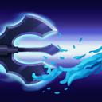
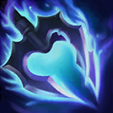

起手裝備
 增幅典籍
增幅典籍
保留巫妖之禍 → 死亡之帽 → 虛空之杖 → 無限寶珠 → 中婭沙漏；W 重置普攻、E 不可選取與 R 命中窗口服務單點刺殺，保留 E 作撤離。起手增幅典籍，鞋線魔力之靴→魔法使之鞋；核對五成裝、前三核心及情境替換來源。


五件成裝與鞋子分開列示；起手與核心是購買路線，不是額外佔用的成裝欄位。鞋子完成時機仍依對線壓力與回城金錢調整。


瞬疾步法／即刻衝擊／傲慢／眼球收集器／絕對專注。依W 重置普攻、E 不可選取與 R 命中窗口服務單點刺殺，保留 E 作撤離核對觸發條件；確認主系各列一枚與一枚副系，First Strike映射先發制人、Empowerment映射遇強則強。


閃現保留進場角度與撤退彈性，重擊維持打野必備。 本英雄以法系刺客／不可選取／單點爆發定位使用；7.3b不改重擊主動斬殺值，需看進化與充能。
加點優先：E > W > Q
優先級E > W > Q；保留適合本頁清營的前三級，之後依優先級逐級檢查，R在5／9／13級。此為15級編輯順序，不宣稱逐場固定最優。

普攻附帶持續魔法傷害，並提高對野怪的傷害；此處不加入電腦版穿越單位被動。
穿過指定敵人造成魔法傷害並附帶普攻命中特效。

重置並強化下一次普攻，對目標附近造成傷害及施加海神三叉戟；其後普攻短暫附加魔法傷害。強化攻擊擊殺目標可返還部分冷卻。
跳上三叉戟時不可被選取；自然落地造成較大範圍傷害與緩速，提前再次施放可調整落點，但範圍較小且不附同樣緩速。
丟出魚餌黏住首名英雄並緩速，延遲後召喚鯊魚造成高額傷害、擊飛與範圍緩速。
W 重置普攻、E 不可選取與 R 命中窗口服務單點刺殺，保留 E 作撤離。移除電腦版穿越單位被動，區分 E 自然落地與提早再施放。
4技遠距離命中 → 1技突進 → 2技強化普攻 → 普攻 → 3技追擊
大絕命中後再進場，二技重置普攻；三技盡量留給追擊、躲控制或越塔撤退。
1技穿刺 → 普攻 → 2技重置 → 3技 → 二段落地
一技貼近後普攻接二技重置，三技用來躲反擊並補範圍傷害；適合沒有大絕時抓落單。
4技開戰 → 3技不可選取 → 1技穿越 → 2技 → 普攻
從側翼丟出大絕逼迫站位，再用三技跨過控制區；擊殺後立刻利用一技或三技撤出。
二技強化普攻與擊殺返還冷卻可提高單體清野效率，三技負責範圍營地與保命。升到 5 級後優先抓沒有位移的路線；大絕距離越長，開戰效果越明顯。
巫妖之禍 → 死亡之帽成形後，依法系刺客／不可選取／單點爆發定位處理團戰與兵線；第三件接虛空之杖。後兩件按情境調整，保留主要輸出循環或承傷功能。支援前確認重擊層數、充能與物件時間，沒有線權時先交換另一側資源。
正面進場很容易被控制，應等待敵方後排落單或保命技能交出。完成斬殺後立即用三技不可選取與一技穿越單位撤離。
以同頁打野威脅名單嘉文四世、拉姆斯更新，有利名單僅是既有機制判斷，排除與威脅重複者；飛斯入侵仍看兩側線權、血量及關鍵技能，不當作固定單挑勝率。
對局名單是機制與分路判斷，不代表固定勝率；需同時看雙方熟練度、兵線與陣容。
替換以本頁五件成裝為基準；同一格建議擇一。二、三級鞋是一條升級線，換鞋時整條同步；魔劍進化不占新欄位。
高
觸發：敵方前排物防／魔防成形，或近身普攻威脅明顯。
已帶對應穿透或冰霜之心時保留，不重複購買；依實際傷害類型決定。
高
觸發：主要死亡原因是一輪集火，無法完成輸出或控制。
同一格有多個建議時擇一；核心成形後依實際威脅調整。
高
觸發：敵方法術先手或持續魔法傷害成為主要威脅。
中婭沙漏 → 女妖面紗
主要死亡原因是單次技能開戰時改女妖；護盾被消耗後仍要後退。
主要死亡原因是單次技能開戰時改女妖；護盾被消耗後仍要後退。
高
觸發：魔法傷害與控制鏈影響生存或輸出。
魔力之靴 → 水星之靴
魔法傷害及可被韌性縮短的控制占主導時，鞋線整條改水星之靴→鎖鏈軍靴。
魔法傷害及可被韌性縮短的控制占主導時，鞋線整條改水星之靴→鎖鏈軍靴。
韌性不能縮短所有控制，例如擊飛；護盾與解控各有適用條件。
高
觸發：敵人持續回復令集火失敗。
中婭沙漏 → 黑魔禁書
敵方回復妨礙集火且隊友無法維持重創時，改黑魔禁書；可先用遺忘寶珠過渡。
敵方回復妨礙集火且隊友無法維持重創時，改黑魔禁書；可先用遺忘寶珠過渡。
本頁校正版本：7.3b；校正日期：2026-10-15。
參考來源標示版本：7.3b
Tier、出裝、符文與對局是本站編輯建議，不是官方推薦或已驗證台服勝率。v118延續同日v117的逐路複核，針對來源缺口及數值衝突再核對；未宣稱所有技能已在手機內逐級實測。
評級理由：依同分路7.3b參考 B，C → B，作本站評級。 W 重置普攻、E 不可選取與 R 命中窗口服務單點刺殺，保留 E 作撤離；沒有台服同分路勝率樣本。
Riot 官方資料 ↗ · WildRiftFire 參考攻略 ↗
本頁延續2026/10/15 v117的打野逐項複核，當前採用7.3b來源；來源只用作配置與機制參考，不等同官方推薦或台服即時勝率。
依同分路7.3b參考 B，C → B，作本站評級。 W 重置普攻、E 不可選取與 R 命中窗口服務單點刺殺，保留 E 作撤離；沒有台服同分路勝率樣本。